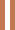

Fast fashion
Iets is pas duurzaam als het mens, dier en natuur niet schaadt. Fast fashion is daarom super schadelijk, een paar kenmerken zijn:
- Hoge omloopsnelheid, door zich snel opvolgende collecties
- Productie is tegen extreem lage lonen
- Milieu impact is hoog
Inmiddels zijn veel fast fashion ketens zoals H&M en Zara met duurzamere collecties gekomen. Deze blijken echter toch niet zo duurzaam te zijn als gezegd, dat heet ook wel greenwashing. Toch is tweedehands of bij een duurdere duurzame winkel iets kopen niet altijd een optie. Hier zijn dus een paar dingen waar je op kan letten als je toch bij fast fashion winkels koopt.

Waar op te letten bij kopen van Fast fashion

Het label - Op het label staat vaak vermeld wat voor stoffen er in de kleding zitten. Zoek vooral naar woorden als biologisch en gerycycled. Op onze pagina “stof advies” vind je nog tips en tops over de beste stoffen voor het kledingstuk dat je koopt.